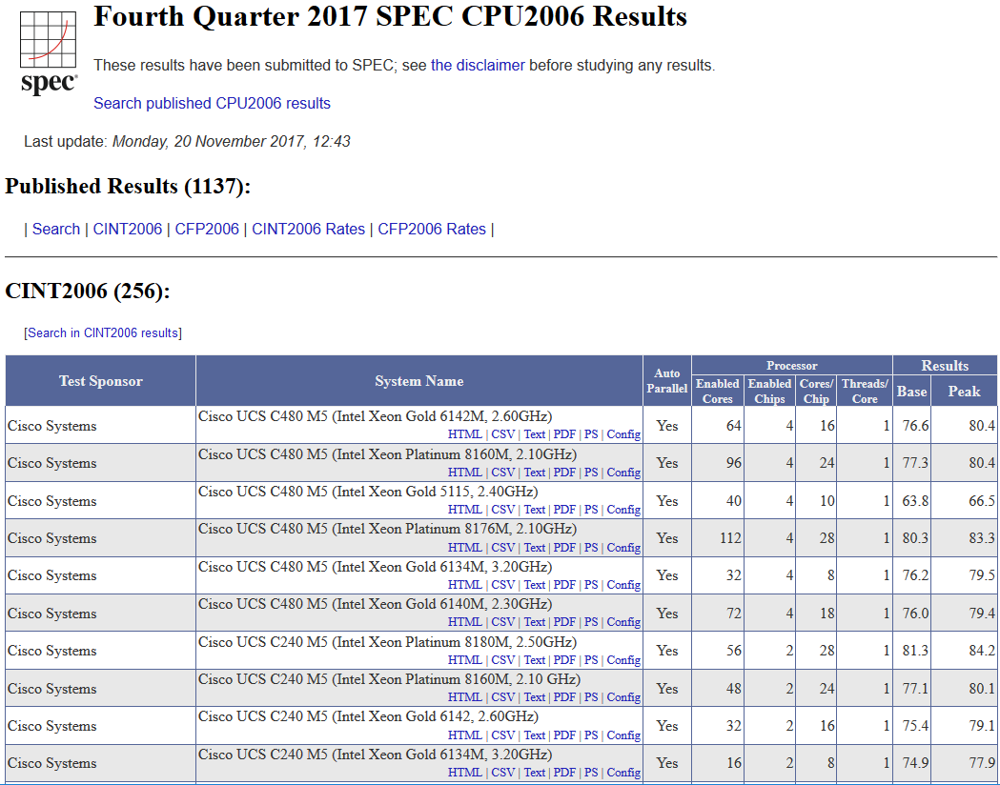
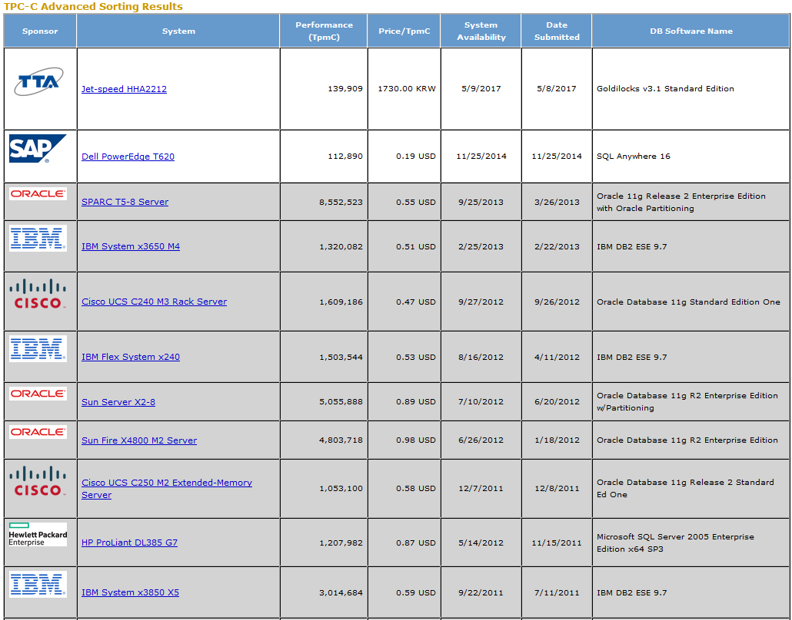
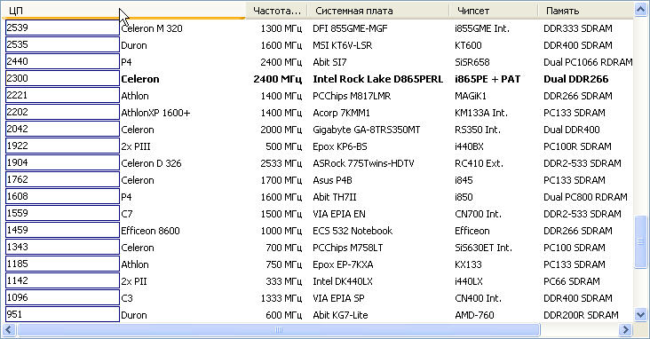
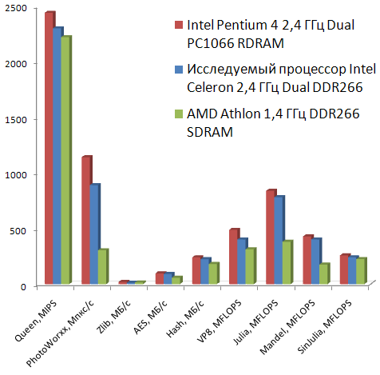
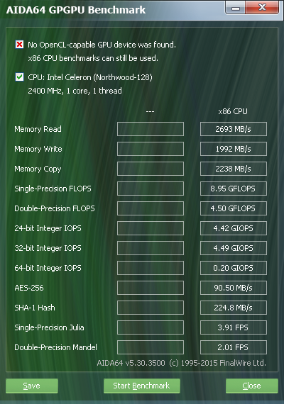
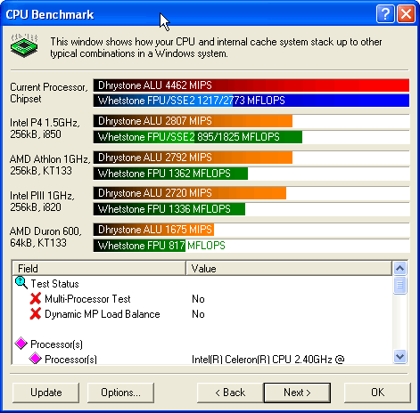
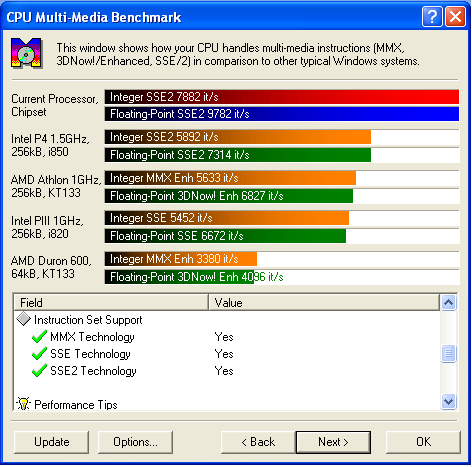

1.1. Цель работы
1.2. Методы оценки производительности компонентов компьютера
1.2.1. Общие подходы к оценке производительности
1.2.2. Методика MIPS
1.2.3. Методика MFLOPS
1.2.4. "Ливерморские циклы"
1.2.5. Методика SPEC
1.2.6.Тесты TPC
1.2.7.Тесты AIM
1.2.8.Тесты AIDA64
1.3. Описание лабораторной установки
1.4. Порядок выполнения работы
1.4.1.AIDA64
1.4.1.1.Исследование производительности процессора
1.4.1.2.Исследование производительности графического ядра
1.4.2.SiSoft Sandra Professional
1.4.2.1.Исследование производительности процессора
1.4.2.2.Исследование производительности мультимедийных расширений
1.5. Содержание отчета
1.6. Контрольные вопросы и задания
Изучение стандартных методик измерения производительности центрального процессора и других компонентов компьютера. Измерение производительности ЦПУ, оперативной памяти и периферийных устройств.
Производительность является одной из важнейших характеристик, определяющих эффективность компьютеров различных типов. При этом основу для сравнения различных типов компьютеров дают стандартные методики измерения производительности. В процессе развития вычислительной техники появилось несколько таких стандартных методик. Они позволяют разработчикам и пользователям осуществлять выбор между альтернативами на основе количественных показателей, что дает возможность постоянного прогресса в данной области.
Единицей измерения производительности компьютера является время: компьютер, выполняющий тот же объем работы за меньшее время, является более быстрым. Время выполнения любой программы измеряется в секундах. Часто производительность измеряется как скорость появления некоторого числа событий в секунду, так что меньшее время подразумевает большую производительность.
Время выполнения задания должно включать буквально все: работу процессора, обращения к диску, обращения к памяти, ввод-вывод и накладные расходы операционной системы. Однако при работе в мультипрограммном режиме во время ожидания ввода-вывода для одной программы, процессор может выполнять другую программу, и система не обязательно будет минимизировать время выполнения данной конкретной программы.
Для измерения времени работы процессора используется специальный параметр - время ЦПУ (CPU time), которое не включает время ожидания ввода-вывода или время выполнения другой программы. Очевидно, что время ответа, видимое пользователем, является полным временем выполнения программы, а не временем ЦПУ. Время ЦПУ может далее делиться на время, затраченное ЦПУ непосредственно на выполнение программы пользователя и называемое пользовательским временем ЦПУ, и время ЦПУ, затраченное операционной системой на выполнение заданий, затребованных программой, и называемое системным временем ЦПУ.
В общем случае, производительность ЦПУ зависит от трех параметров:
длительности такта синхронизации или частоты (определяется технологией аппаратных средств и функциональной организацией процессора);
среднего количества тактов на команду (зависит от функциональной организации и архитектуры системы команд);
количества выполняемых команд (определяется архитектурой системы команд и технологией компиляторов).
Когда сравниваются две машины, необходимо рассматривать все три компоненты, чтобы определить относительную производительность.
Одной из возможных единиц измерения производительности процессора (по отношению к времени выполнения) является MIPS - миллион команд в секунду (MIPS - Million Instructions Per Second).
В общем случае MIPS представляет собой количество операций в единицу времени, т.е. для любой заданной программы MIPS есть отношение количества команд в программе к времени ее выполнения. Таким образом, производительность может быть определена как обратная к времени выполнения величина, причем более быстрые машины при этом будут иметь более высокий рейтинг MIPS.
Преимуществом использования MIPS для оценки производительности является простота получаемой оценки: более быстрая машина характеризуется большим числом MIPS. Однако использование MIPS в качестве метрики для сравнения компьютеров имеет ряд недостатков:
Классическим примером для последнего случая является рейтинг MIPS для машины, в состав которой входит сопроцессор плавающей точки. Поскольку, в общем случае, на каждую команду с плавающей точкой требуется большее количество тактов синхронизации чем на целочисленную команду, то программы, используя сопроцессор плавающей точки вместо соответствующих подпрограмм из состава программного обеспечения, выполняются за меньшее время, но имеют меньший рейтинг MIPS. При отсутствии сопроцессора операций над числами с плавающей точкой реализуются с помощью подпрограмм, использующих более простые команды целочисленной арифметики и, как следствие, такие машины имеют более высокий рейтинг MIPS, но выполняют настолько большее количество команд, что общее время выполнения значительно увеличивается.
Измерение производительности компьютеров при решении научно-технических задач, в которых существенно используется арифметика с плавающей точкой, всегда вызывало особый интерес. Обычно для таких задач производительность процессора оценивается в MFLOPS (миллион элементарных арифметических операций над числами с плавающей точкой, выполняемых в секунду). Как единица измерения, MFLOPS предназначена для оценки производительности только операций с плавающей точкой, и поэтому не применима вне этой ограниченной области. Оценка производительности в MFLOPS зависит как от машины, так и от программы. Однако этот термин менее "безобидный", чем MIPS. Он базируется на количестве выполняемых операций, а не на количестве выполняемых команд. Одна и та же программа, работающая на различных компьютерах, будет выполнять различное количество команд, но одно и то же количество операций с плавающей точкой.
Однако и MFLOPS имеет ряд недостатков. Прежде всего, это связано с тем, что наборы операций с плавающей точкой не совместимы на различных компьютерах. Например, в суперкомпьютерах фирмы Cray Research отсутствует команда деления (имеется, правда, операция вычисления обратной величины числа с плавающей точкой, а операция деления может быть реализована с помощью умножения делимого на обратную величину делителя). В то же время многие современные микропроцессоры имеют команды деления, вычисления квадратного корня, синуса и косинуса.
Другая проблема заключается в том, что рейтинг MFLOPS меняется не только на смеси целочисленных операций и операций с плавающей точкой, но и на смеси быстрых и медленных операций с плавающей точкой. Например, программа со 100% операций сложения будет иметь более высокий рейтинг, чем программа со 100% операций деления.
Решение обеих проблем заключается в том, чтобы взять "каноническое" или "нормализованное" число операций с плавающей точкой из исходного текста программы и затем поделить его на время выполнения. В табл. 1.1 показао, каким образом авторы тестового пакета "Ливерморские циклы" вычисляют для программы количество нормализованных операций с плавающей точкой в соответствии с операциями, действительно находящимися в ее исходном тексте.
Таблица 1.1 - Нормирующие коэффициенты для некоторых операций с ПТ
| Реальные операции с ПТ | Нормализованные операции с ПТ |
|---|---|
| Сложение, вычитание, сравнение, умножение | 1 |
| Деление, квадратный корень | 4 |
| Экспонента, синус, ... | 8 |
Наиболее часто MFLOPS, как единица измерения производительности, используется при проведении контрольных испытаний на тестовых пакетах «Ливерморские циклы».
"Ливерморские циклы" представляют собой набор фрагментов программ в среде ФОРТРАНА, каждый из которых взят из реальных программных систем, эксплуатируемых в Ливерморской национальной лаборатории им. Лоуренса (США). Обычно при проведении испытаний используется либо малый набор из 14 циклов, либо большой набор из 24 циклов. В качестве теста при испытаниях используется стандартная программа решения систем линейных алгебраических уравнений LINPACK.
Использование тестового пакета LINPACK, выполняющего решение системы уравнений с двойной точностью, как основы для демонстрации рейтинга MFLOPS стало общепринятой практикой в компьютерной промышленности. При этом следует помнить, что при размере исходной матрицы 100х100, она полностью может размещаться в кэш-памяти емкостью, например, 1 Мбайт. Если при проведении испытаний используется матрица размером 1000х1000, то емкости такого кэша уже недостаточно и некоторые обращения к памяти будут приводить к промахам и потребуют большего времени на обработку обращений к памяти. Для многопроцессорных систем также имеются соответствующие версии LINPACK и выполненные испытания показывают линейное увеличение производительности с ростом числа процессоров.
Проблема создания пакетов тестов, базирующихся на реальных прикладных программах широкого круга пользователей и обеспечивающих эффективную оценку производительности процессоров, привела к созданию корпорации SPEC (Standard Performance Evaluation Corporation). Основной целью этой организации является разработка и поддержка стандартизованного набора специально подобранных тестовых программ для оценки производительности новейших поколений высокопроизводительных компьютеров.

Рис. 1.1 - Фрагменты результатов теста CINT2006
Разработанный корпорацией SPEC набор тестов CINT (рис. 1.1) применяется для измерения производительности процессора при обработке целых чисел. Тест состоит из шести программ, написанных на языке Си и выбранных из различных прикладных областей: теория цепей, интерпретатор языка ЛИСП, разработка логических схем, упаковка текстовых файлов, электронные таблицы и компиляция программ.
Второй набор тестов CFP, предлагаемый корпорацией SPEC, используется для измерения производительности процессора при обработке чисел с плавающей точкой. Набор состоит из 14 программ, также выбранных из различных прикладных областей: квантовая физика, астрофизика, разработка аналоговых схем, моделирование методом Монте-Карло, квантовая химия, оптика, робототехника, прогноз погоды и другие научные и инженерные задачи.
Оценки, получаемые с помощью тестов SPECint и SPECfp, достаточно хорошо характеризуют производительность процессора и системы памяти при работе в однозадачном режиме, но их нельзя применять для оценки производительности многопроцессорных и однопроцессорных систем, работающих в многозадачном режиме. Для решения этих проблем была создана организация TPC, основной задачей которой является разработка тестовых пакетов для оценки систем обработки транзакций и баз данных, а также для распространения объективных данных в промышленности.
По мере расширения использования компьютеров при обработке транзакций в сфере бизнеса все более важной становится возможность справедливого сравнения систем между собой. С этой целью в 1988 году был создан Совет по оценке производительности обработки транзакций (TPC - Transaction Processing Performance Council), который представляет собой бесприбыльную организацию. Любая компания или организация может стать членом TPC после уплаты соответствующего взноса. На сегодня членами TPC являются практически все крупнейшие производители аппаратных платформ и программного обеспечения для автоматизации коммерческой деятельности. К настоящему времени TPC создал три тестовых пакета для обеспечения объективного сравнения различных систем обработки транзакций и планирует создать новые оценочные тесты.
В компьютерной индустрии термин транзакция (transaction) может означать почти любой вид взаимодействия или обмена данными. Однако в мире бизнеса "транзакция" имеет вполне определенный смысл: коммерческий обмен товарами, услугами или деньгами. В настоящее время практически все бизнес-транзакции выполняются с помощью компьютеров. Наиболее характерными примерами систем обработки транзакций являются системы управления учетом, системы резервирования авиабилетов и банковские системы. Таким образом, необходимость стандартов и тестовых пакетов для оценки таких систем все больше усиливается.
Чтобы решить эти проблемы, и была создана организация TPC, основной задачей которой является точное определение тестовых пакетов для оценки систем обработки транзакций и баз данных, а также для распространения объективных, проверяемых данных в промышленности.
TPC определяет и управляет форматом нескольких тестов для оценки производительности OLTP (On-Line Transaction Processing), включая тесты TPC-A, TPC-B, TPC-C (рис. 1.2), TPC-D и TPC-E. Как уже отмечалось, создание оценочного теста является ответственностью организации, выполняющей этот тест. TPC требует только, чтобы при создании оценочного теста выполнялись определенные условия. Хотя упомянутые тесты TPC не представляют собой тесты для непосредственной оценки производительности баз данных, системы реляционных баз данных являются ключевыми компонентами любой системы обработки транзакций.

Рис. 1.2 - Фрагмент результатов тестов TPC-C
Одной из независимых организаций, осуществляющей оценку производительности вычислительных систем, является частная компания AIM Technology, которая была основана в 1981 году. Компания разрабатывает и поставляет программное обеспечение для измерения производительности систем, а также оказывает услуги по тестированию систем конечным пользователям и поставщикам вычислительных систем и сетей, которые используют промышленные стандартные операционные системы, такие как UNIX и OS/2.
За время своего существования компания разработала специальное программное обеспечение, позволяющее легко создавать различные рабочие нагрузки, соответствующие уровню тестируемой системы и требованиям по ее использованию. Это программное обеспечение состоит из двух основных частей: генератора тестовых пакетов (Benchmark Generator) и нагрузочных смесей (Load Mixes) прикладных задач.
Генератор тестовых пакетов представляет собой программную систему, которая обеспечивает одновременное выполнение множества программ. Он содержит большое число отдельных тестов, которые потребляют определенные ресурсы системы, и тем самым акцентируют внимание на определенных компонентах, из которых складывается ее общая производительность. При каждом запуске генератора могут выполняться любые отдельные или все доступные тесты в любом порядке и при любом количестве проходов, позволяя тем самым создавать для системы практически любую необходимую рабочую нагрузку. Все это дает возможность тестовому пакету моделировать любой тип смеси при постоянной смене акцентов (для лучшего представления реальной окружающей обстановки) и при обеспечении высокой степени конфигурирования.
Каждая нагрузочная смесь представляют собой формулу, которая определяет компоненты требуемой нагрузки. Эта формула задается в терминах количества различных доступных тестов, которые должны выполняться одновременно для моделирования рабочей нагрузки.
Используя эти две части программного обеспечения AIM, можно действительно создать для тестируемой системы любую рабочую нагрузку, определяя компоненты нагрузки в терминах тестов, которые должны выполняться генератором тестовых пакетов. Если некоторые требуемые тесты отсутствуют в составе генератора тестовых пакетов, то они могут быть легко туда добавлены.
Очевидно, что сам по себе процесс моделирования рабочей нагрузки мало что дал бы для сравнения различных машин между собой при отсутствии у AIM набора хорошо подобранных смесей, которые представляют собой ряд важных для пользователя прикладных задач.
Все смеси AIM могут быть разделены на две категории: стандартные и заказные. Заказные смеси создаются для точного моделирования особенностей среды конечного пользователя или поставщика оборудования. Заказная смесь может быть тесно связана с определенными тестами, добавляемыми к генератору тестовых пакетов. В качестве альтернативы заказная смесь может быть связана с очень специфическим приложением, которое создает для системы необычную нагрузку. В общем случае заказные смеси разрабатываются на основе одной из стандартных смесей AIM путем ее "подгонки" для более точного представления определенной ситуации. Обычно заказные смеси разрабатываются заказчиком совместно с AIM Technology, что позволяет использовать многолетний опыт AIM по созданию и моделированию нагрузочных смесей.
К настоящему времени AIM создала восемь стандартных смесей, которые представляют собой обычную среду прикладных задач. В состав этих стандартных смесей входят:
Рис. 1.3 - Тест CPU Queen основан на головоломке с 8 ферзями
CPU Queen — оценивает, как идёт работа по предсказанию ветвлений центрального процессора и осуществляется ошибочный прогноз ветви. Происходит выдача решений для головоломки с 8 ферзями, расположенными на шахматной доске 10х10. Учитываем теорию: если тактовая частота одинакова, тот процессор, который обладает более укороченным конвейером и у которого более низкий уровень накладных расходов, в результате ошибочного прогноза ветвления способен показать лучшие результаты теста. К примеру, отключая гиперпотоковость, Pentium 4 на основе Intel Northwood получит баллы выше, чем Intel Prescott. Это происходит потому, что в первом процессоре есть 20-ступенчатый конвейер, а в последнем — 31-ступенчатый. Целочисленные оптимизации CPU Queen - MMX, SSE2, SSSE3.
Рис. 1.4 - Тест CPU PhotoWorxx оценивает производительность процессора при обработке изображений
CPU PhotoWorxx — даёт возможность установить производительность процессора на основе алгоритмов обработки двухмерных фото. С довольно крупными изображение RGB происходит следующее:
Тестпредназначе в основном для блоков арифметики SIMD-архитектуры главного процессора и существующих подсистем памяти. Наборы указаний CPU PhotoWorxx имеют следующие расширения: x87,MMX, MMX+,AVX, AVX2, 3DNow!, 3DNow!+, SSE, SSE2, SSSE3, SSE4.1, SSE4A, , а также идёт поддержкаNUMA, мультипроцессоры (SMP), гиперпотоковость, и многоядерность (CMP).
CPU ZLib — даёт комбинированную оценку производительности главного процессора и подсистемы памяти благодаря сжатию данных ZLib. Инструкции применяются основные x86, но поддержка гиперпотока, мультипроцессоры (SMP) и многоядерность (CMP).
CPU AES — оценивает производительность главного процессора при выполнении шифровки по криптоалгоритму AES (симметричному алгоритму шифрования по блокам). На сегодня AES используют в нескольких инструментах сжатия: 7z, RAR, WinZip. Применяют и в программных шифровках TrueCrypt, BitLocker, FileVault (Mac OS X). Инструкции следующие: x86, MMX и SSE4.1. Система аппаратно ускорена на процессорах VIA C3, C7, Nano и QuadCore, с технологиями поддержки VIA PadLock Security Engine. Применима и для процессора с набором команд Intel AES-NI. Идёт поддержка гиперпотоковости, мультипроцессоры (SMP) и многоядерности (CMP).
CPU Hash — определяет производительность центрального процессора за счёт алгоритма кэширования SHA1 в соответствии с Федеральным стандартом обработки данных 180-4. Код выполнен на языке ассемблер и оптимизирован под основные ядра AMD, Intel и VIA с учётом использования следующего набора команд SSE2, SSSE3, MMX, MMX+/SSE, AVX, AVX2, XOP, BMI, а также BMI2. Тест CPUHash - ускорен аппаратно на процессорах VIA C7, VIA Nano и VIA QuadCore, которые могут использовать технологию VIA PadLock Security Engine.
FPU VP8 — проводит анализ сжатия видео кодеком Google VP8 (WebM) по версии 1.1.0. Осуществляется кодировка за 1 проход видеопотока, имеющего расширение 1280x720 и идущего со скоростью 8192 кбит/с ( с учётом максимально настроенного качества). Составляющие кадров генерируются при помощи модуля фракталов Жюлиа FPU. Здесь применяется следующие расширения и наборы команд: MMX, SSE2, SSSE3 или SSE4.1. Тут также поддерживается мультипроцессоры (SMP), многоядерность (CMP) и гиперпотоковость.
Рис. 1.5 - Тест FPU Julia строит фрактал Жюлиа
FPU Julia — оценивает производительность операций одинарной точности (с плавающей частотой для 32-битной системы). Происходит вычисление нескольких фрагментов фрактала Жюлиа. Используют тот же язык, подходит под ядра AMD, Intel и VIA с использованием таких наборов команд: x87, 3DNow!, 3DNow!+, SSE, AVX, AVX2, FMA и FMA4. Поддержка аналогичная.
Рис. 1.6 - Тест FPU Mandel строит фрактал Мандельброта
FPU Mandel — операции двойной точности с плавающей запятой для 64-битной точности тестируют при помощи FPU Mandel. Осуществляется моделирование частей фрактала Мандельброта. Язык тот же, процессоры такие же, поддержка, как и в предыдущих тестах. Набор команд: FMA и FMA4, x87, SSE2, AVX, AVX2.
Рис. 1.7 - Тест FPU SinJulia строит модифицированный фрактал Жюлиа
FPU SinJulia — проводит оценку операций повышенной точности с плавающей запятой (80-битная система). Вычисления делаются по каждому взятому кадру с применением фрактала Жюлиа(модифицированного). Язык - как и в предыдущих вариантах, ядра те же, использование тригонометрических и экспоненциальных инструкции архитектуры x87. Поддерживает гиперпотоковость, многоядерность (CMP) и мультипроцессоры (SMP).
В качестве лабораторной установки используются ПК, входящие в состав кафедральной локальной сети, оснащенные операционными системами MS Windows 10 и прикладным программным обеспечением AIDA64, SiSoft Sandra Professional.
Выполнение работы необходимо провести в следующей последовательности:
Открыть программное приложение AIDA64. На экране монитора будет отображено основное окно приложения.
В проводнике окна найти раздел Тест (Test) → CPU Queen, после щелчка на котором на экране появится раздел CPUQueen (рис. 1.8.).

Рис. 1.8 - Результаты теста CPU Queen
Аналогично выполнить все остальные тесты CPU и FPU
Построить таблицу числовых величин значений производительности различных типов CPU (табл. 1.2).
Таблица 1.2 - Значения производительности различных типов CPU
| Тип процессора | CPU | FPU | |||||||
|---|---|---|---|---|---|---|---|---|---|
| Queen, MIPS |
PhotoWorxx, Мпкс/с |
Zlib, МБ/с |
AES, МБ/с |
Hash, МБ/с |
VP8, MFLOPS |
Julia, MFLOPS |
Mandel, MFLOPS |
SinJulia, MFLOPS |
|
| Intel Pentium 4 2,4 ГГц Dual PC1066 RDRAM | 2440 | 1141 | 19.5 | 97 | 241 | 488 | 839 | 429 | 258 |
| Исследуемый процессор Intel Celeron 2,4 ГГц Dual DDR266 | 2300 | 890 | 11.6 | 91 | 224 | 401 | 782 | 401 | 241 |
| AMD Athlon 1,4 ГГц DDR266 SDRAM | 2221 | 304 | 14.5 | 57 | 181 | 313 | 381 | 176 | 225 |
Построить гистограммы производительности по MIPS и MFLOPS для исследуемого процессора и остальных CPU (рис. 1.9).

Рис. 1.9 - Гистограммы производительности по MIPS и MFLOPS для исследуемого процессора и других CPU
В главном меню программы выбрать пункт Сервис → Тест GPGPU, после чего на экране появится окно AIDA64 GPGPU Benchmark (рис. 1.10). Запустите тест.

Рис. 1.10 - Результаты AIDA64 GPGPU Benchmark
Эта тестовая панели располагает набором тестов OpenCL GPGPU. Благодаря им оценивают вычислительную производительность с использованием различных нагрузок OpenCL. Каждый отдельно взятый тест можно проходить на 16-ти графических процессорах, в том числе процессорах NVIDIA, AMD и Intel, или же их комбинировать. Имеется полная поддержка конфигураций CrossFire, SLI, APU и dGPU. В целом такая функция позволяет определить уровень производительности любой вычислительной техники, предоставленной в качестве графического процессора устройств OpenCL.
Сохранить результаты можно, нажав мышкой кнопку Save
Открыть программное приложение SiSoft Sandra Professional. На экране монитора будет отображено основное окно приложения.
В рабочей зоне окна найти папку CPU Benchmark, после двойного щелчка по которой на экране появится всплывающее окно вызываемой папки (рис. 1.11.).

Рис. 1.11 - Результаты теста CPU Benchmark SiSoft Sandra Professional
В рабочей зоне окна найти папку Multimedia Benchmark, после двойного щелчка по которой на экране появится всплывающее окно вызываемой папки.

Рис. 1.12 - Результаты теста Multimedia Benchmark SiSoft Sandra Professional
Результаты исследований (таблицы и гистограммы) занести в отчет по работе.
Отчет по работе должен содержать цель работы, описание и анализ методик MIPS и MFLOPS измерения производительности CPU и других элементов компьютерной системы, практические результаты исследования производительности процессора и памяти компьютерной системы в табличном либо графическом (скриншот) виде и в форме гистограмм, выводы по работе.